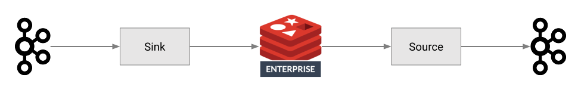

1. Overview
Redis Kafka Connector is a Confluent-verified connector that stores data from Kafka topics into Redis and pushes data from Redis into Kafka topics.

This guide provides documentation and usage information across the following topics:
2. Quick Start
This section shows how to configure the Redis Kafka Connector to import/export data between Redis and Apache Kafka and provides a hands-on look at the functionality of the source and sink connectors.
2.2. Start the Sandbox
The sandbox starts the following Docker services:
-
Redis Stack
-
Apache Kafka
-
Kafka Connect with the Redis Kafka Connector installed
Clone the release and build the connector image locally so the sandbox does not depend on an unversioned, previously published Docker image:
git clone --branch v1.2.0 --single-branch https://github.com/redis-field-engineering/redis-kafka-connect.git
cd redis-kafka-connect
docker compose up --buildThe Compose example retains legacy 7.7 broker/UI services. It is a demonstration, not the Confluent Platform 8.3.2 qualification environment described under Tested combinations. In a second terminal in the repository directory, inspect service status:
docker compose ps2.3. Add Connectors
Now that the required services are up and running, we can add connectors to Kafka Connect to transfer data between Redis and Kafka:
-
Add a sink connector to transfer data from Kafka to Redis
-
Add a source connector to transfer data from Redis to Kafka
2.3.1. Add a Datagen
Kafka Connect Datagen is a Kafka Connect source connector for generating mock data.
Create the Datagen connector with the following command:
curl -X POST -H "Content-Type: application/json" --data '
{ "name": "datagen-pageviews",
"config": {
"connector.class": "io.confluent.kafka.connect.datagen.DatagenConnector",
"kafka.topic": "pageviews",
"quickstart": "pageviews",
"key.converter": "org.apache.kafka.connect.json.JsonConverter",
"value.converter": "org.apache.kafka.connect.json.JsonConverter",
"value.converter.schemas.enable": "false",
"producer.interceptor.classes": "io.confluent.monitoring.clients.interceptor.MonitoringProducerInterceptor",
"max.interval": 200,
"iterations": 10000000,
"tasks.max": "1"
}}' http://localhost:8083/connectors -w "\n"This automatically creates the Kafka topic pageviews and produces data with a schema configuration from pageviews_schema.avro
|
Note
|
Why do I see the message 'Failed to connect'? It takes up to three minutes for the Kafka Connect REST API to start. If you receive the following error, wait three minutes and run the preceding command again.
|
To confirm that you added the Datagen connector, run the following command:
curl -X GET http://localhost:8083/connectors
2.3.2. Add a Sink Connector
The command below adds a Redis Kafka Connector sink connector configured with these properties:
-
The class Kafka Connect uses to instantiate the connector
-
The Kafka topic from which the connector reads data
-
The connection URI of the Redis database to which the connector writes data
-
The Redis command to use for writing data (
JSONSET) -
Key and value converters to correctly handle incoming
pageviewsdata -
A Single Message Transforms to extract a key from
pageviewsmessages.
curl -X POST -H "Content-Type: application/json" --data '
{"name": "redis-sink-json",
"config": {
"connector.class":"com.redis.kafka.connect.RedisSinkConnector",
"tasks.max":"1",
"topics":"pageviews",
"redis.uri":"redis://redis:6379",
"redis.type":"JSON",
"key.converter": "org.apache.kafka.connect.json.JsonConverter",
"value.converter": "org.apache.kafka.connect.storage.StringConverter",
"value.converter.schemas.enable": "false",
"transforms": "Cast",
"transforms.Cast.type": "org.apache.kafka.connect.transforms.Cast$Key",
"transforms.Cast.spec": "string"
}}' http://localhost:8083/connectors -w "\n"You can check that Kafka messages are being written to Redis with this command:
docker compose exec redis /opt/redis-stack/bin/redis-cli "keys" "*"
You should see the following output:
1) "pageviews:6021"
2) "pageviews:211"
3) "pageviews:281"
...To retrieve the contents of a specific key use this command:
docker compose exec redis /opt/redis-stack/bin/redis-cli "JSON.GET" "pageviews:1451"
⇒ "{\"viewtime\":1451,\"userid\":\"User_6\",\"pageid\":\"Page_35\"}"
2.3.3. Add a Source Connector
The following command adds a source connector configured with these properties:
-
The class Kafka Connect uses to instantiate the connector
-
The connection URI of the Redis database the connector connects to
-
The name of the Redis stream from which the connector reads messages
-
The Kafka topic to which the connector writes data
curl -X POST -H "Content-Type: application/json" --data '
{ "name": "redis-source",
"config": {
"tasks.max":"1",
"connector.class":"com.redis.kafka.connect.RedisStreamSourceConnector",
"redis.uri":"redis://redis:6379",
"redis.stream.name":"mystream",
"topic": "mystream"
}
}' http://localhost:8083/connectors -w "\n"Now add a message to the mystream Redis stream:
docker compose exec redis /opt/redis-stack/bin/redis-cli "xadd" "mystream" "*" "field1" "value11" "field2" "value21"
Examine the topics in the Kafka UI: http://localhost:9021 or http://localhost:8000/.
The mystream topic should have the previously sent stream message.
2.4. Custom Connector
This section describes configuration aspects that are specific to using Redis Kafka Connector as a Custom Connector in Confluent Cloud.
2.4.1. Egress Endpoints
It is required to specify egress endpoints in order for the connector to reach the Redis database.
2.4.2. Sensitive Properties
The following are sensitive properties that must be marked as such in Confluent Cloud UI.
-
redis.uri: URI of the Redis database to connect to, e.g.redis://redis-12000.redis.com:12000 -
redis.username: Username to use to connect to Redis -
redis.password: Password to use to connect to Redis -
redis.key.password: Password of the private key file
2.5. Docker Example
The project repository contains a script that runs all the steps shown in the Quick Start.
Clone the release, build the connector image, and execute run.sh in the repository root:
git clone --branch v1.2.0 --single-branch https://github.com/redis-field-engineering/redis-kafka-connect
cd redis-kafka-connect
docker compose build connect
./run.shThis will:
-
Run
docker compose up -
Wait for Redis, Kafka, and Kafka Connect to be ready
-
Register the Confluent Datagen Connector
-
Register the Redis Kafka Sink Connector
-
Register the Redis Kafka Source Connector
-
Publish some events to Kafka via the Datagen connector
-
Write the events to Redis
-
Send messages to a Redis stream
-
Write the Redis stream messages back into Kafka
Once running, examine the topics in the Kafka Control Center:
The pageviews topic should contain the 10 simple documents added, each similar to:
{
"viewtime": {
"$numberLong": "81"
},
"pageid": "Page_1",
"userid": "User_8"
}-
The
pageviewsstream should contain the 10 change events.
Examine the stream in Redis:
docker compose exec redis /usr/local/bin/redis-cli
xread COUNT 10 STREAMS pageviews 0Messages added to the mystream stream will show up in the mystream topic.
3. Install
Select one of the methods below to install Redis Kafka Connector.
3.1. Runtime and Compatibility
The connector targets Java 17 bytecode. Your Kafka Connect worker must also support the Java runtime you select. Packaged connector tests qualify Confluent Platform 8.3.2 on Java 21 and the stock image’s bundled runtime against Redis Software 8.2. See Tested combinations for exact Redis versions, deployment modes, and validation limits. This is not blanket qualification of every Java, Confluent, or Redis 8.x combination.
Before replacing an existing connector, read the migration guide. Keep connector names, Kafka offsets, Redis namespaces, stream groups, and consumer names stable during the upgrade. In particular, cluster transactions and WAIT are rejected, and keys-source notifications remain best effort.
3.2. Download Version 1.2.0
Download the signed Confluent ZIP from GitHub Releases. The ZIP is the installable connector package; GitHub’s generated source archives are source code, not Kafka Connect plugins.
curl --fail --location --remote-name https://github.com/redis-field-engineering/redis-kafka-connect/releases/download/v1.2.0/redis-redis-kafka-connect-1.2.0.zip
curl --fail --location --remote-name https://github.com/redis-field-engineering/redis-kafka-connect/releases/download/v1.2.0/redis-redis-kafka-connect-1.2.0.zip.asc
curl --fail --location --remote-name https://github.com/redis-field-engineering/redis-kafka-connect/releases/download/v1.2.0/checksums_sha256.txt
shasum --algorithm 256 --check --ignore-missing checksums_sha256.txtConfirm that the ZIP reports OK. The checksum file also covers the optional SBOM
and vulnerability report; --ignore-missing allows those files to be omitted.
To authenticate the ZIP, use GnuPG and the release signing key with fingerprint
7010 95D5 7EFF D81B 5DB3 A3CC B482 7E18 BA6F 8ED7:
gpg --keyserver hkps://keyserver.ubuntu.com --recv-keys 701095D57EFFD81B5DB3A3CCB4827E18BA6F8ED7
gpg --verify redis-redis-kafka-connect-1.2.0.zip.asc redis-redis-kafka-connect-1.2.0.zipThe release also includes a CycloneDX SBOM and vulnerability scan report. The report records the scanner/database used; it reflects known advisories at scan time.
3.3. Confluent Hub
The canonical listing is
redis/redis-kafka-connect.
redis/redis-enterprise-kafka is a deprecated predecessor.
At the 1.2.0 GitHub release, the canonical Hub listing still carried 0.9.1.
Until Hub offers the requested version, install the downloaded ZIP with the
Confluent Hub Client:
confluent-hub install --no-prompt ./redis-redis-kafka-connect-1.2.0.zipThe CLI must run on each worker host and use that worker’s installation/configuration
paths. Use --component-dir and --worker-configs if they cannot be discovered
automatically. Install the same version on every worker that can run the connector.
3.4. Manually
If the Hub CLI is unavailable, extract the ZIP into a plugin directory on each
worker. The example below uses /opt/kafka/plugins; choose a writable location
appropriate for your deployment:
unzip redis-redis-kafka-connect-1.2.0.zip -d /opt/kafka/pluginsAdd that parent directory to the worker’s existing plugin.path. Preserve the
other plugin directories and remove the old Redis connector version from the
plugin search path. Stop the connector tasks for the change and restart workers
after installation. See Manually Installing Community Connectors for platform-specific details.
3.5. Verify the Installation
Query each worker’s Kafka Connect REST endpoint (adjust the URL and authentication for your environment):
curl --fail --silent http://localhost:8083/connector-pluginsConfirm version 1.2.0 for all three classes:
-
com.redis.kafka.connect.RedisSinkConnector -
com.redis.kafka.connect.RedisStreamSourceConnector -
com.redis.kafka.connect.RedisKeysSourceConnector
Run a canary with representative records and check task status, destination data, source pending messages, and restart behavior before the wider rollout.
4. Sink Connector
The Sink Connector consumes records from a Kafka topic and writes the data to Redis.
4.1. Class Name
The sink connector class name is com.redis.kafka.connect.RedisSinkConnector.
The corresponding configuration property would be:
connector.class = com.redis.kafka.connect.RedisSinkConnector4.2. At least once delivery
The Sink Connector guarantees that records from the Kafka topic are delivered at least once.
4.3. Tasks
The Sink Connector supports running one or more tasks.
You can specify the number of tasks with the tasks.max configuration property.
4.4. Redis Client
This section provides information on Redis client configuration.
4.4.1. Redis URI
Specify the Redis URI in the redis.uri property, for example:
redis.uri = redis://redis-12000.redis.com:12000For complete Redis URI syntax see Redis URI Syntax.
TLS connection URIs start with rediss://.
4.5. Redis Data Structures
The Sink Connector supports the following Redis data-structure types as targets:
4.5.1. Redis Keys
Redis keys are generated using the redis.keyspace configuration property which may contain ${topic} (default) as a placeholder for the originating topic name.
For string, json, and hash data structures, the Kafka message key will be appended to the keyspace.
For example, with redis.type = string, redis.keyspace = ${topic}, a message coming from topic orders with a key of 123 will translate into a Redis key of orders:123.
Leave the keyspace empty ( redis.keyspace = ) if you don’t want any key prefix and just use the message key.
For stream, list, set, zset, and timeseries the Redis key is just the keyspace.
For example with redis.keyspace = set:${topic} and topic orders the Redis key is set:orders.
4.5.2. String
Use the following properties to write Kafka records as Redis strings:
redis.type = STRING
key.converter = <string or bytes> (1)
value.converter = <string or bytes> (2)4.5.3. JSON
Use the following properties to write Kafka records as RedisJSON documents:
redis.type = JSON
key.converter = <string, bytes, or Avro> (1)
value.converter = <string, bytes, or Avro> (2)4.5.4. Hash
Use the following properties to write Kafka records as Redis hashes:
redis.type = HASH
key.converter = <string or bytes> (1)
value.converter = <Avro or JSON> (2)4.5.5. Stream
Use the following properties to store Kafka records as Redis stream messages:
redis.type = STREAM
redis.keyspace = <stream key> (1)
value.converter = <Avro or JSON> (2)4.5.6. List
Use the following properties to append Kafka record keys to a Redis list with RPUSH:
redis.type = LIST
redis.keyspace = <list key> (1)
key.converter = <string or bytes> (2)The Kafka record value can be any format. If a value is null then the member is removed from the list (instead of pushed to the list).
4.5.7. Set
Use the following properties to add Kafka record keys to a Redis set:
redis.type = SET
redis.keyspace = <set key> (1)
key.converter = <string or bytes> (2)The Kafka record value can be any format. If a value is null then the member is removed from the set (instead of added to the set).
4.5.8. Sorted Set
Use the following properties to add Kafka record keys to a Redis sorted set:
redis.type = ZSET
redis.keyspace = <zset key> (1)
key.converter = <string or bytes> (2)The Kafka record value should be float64 and is used for the score.
If the score is null then the member is removed from the sorted set (instead of added to the sorted set).
4.5.9. Timeseries
Use the following properties to write Kafka records as RedisTimeSeries samples:
redis.type = TIMESERIES
redis.keyspace = <key name> (1)-
Timeseries key
The Kafka record key must be an integer (e.g. int64) as it is used for the sample time in milliseconds.
A key of 0 requests the Redis server’s current timestamp, preserving the previous LettuceMod behavior.
The Kafka record value must be a number (e.g. float64) as it is used as the sample value.
4.6. Data Formats
The Sink Connector supports different data formats for record keys and values depending on the target Redis data structure.
4.6.1. Kafka Record Key
The Sink Connector expects Kafka record keys in a specific format depending on the configured target Redis data structure:
| Target | Record Key | Assigned To |
|---|---|---|
Stream |
Any |
None |
Hash |
String |
Key |
String |
Key |
|
List |
Member |
|
Set |
Member |
|
Sorted Set |
Member |
|
JSON |
Key |
|
TimeSeries |
Integer |
Sample time in milliseconds |
4.6.2. Kafka Record Value
Multiple data formats are supported for Kafka record values depending on the configured target Redis data structure. Each data structure expects a specific format. If your data in Kafka is not in the format expected for a given data structure, consider using Single Message Transforms to convert to a byte array, string, Struct, or map before it is written to Redis.
| Target | Record Value | Assigned To |
|---|---|---|
Stream |
Message body |
|
Hash |
Fields |
|
String |
Value |
|
List |
Any |
Removal if null |
Set |
Any |
Removal if null |
Sorted Set |
Number |
Score or removal if null |
JSON |
Value |
|
TimeSeries |
Number |
Sample value |
StringConverter
If record values are already serialized as strings, use the StringConverter to store values in Redis as strings:
value.converter = org.apache.kafka.connect.storage.StringConverterByteArrayConverter
Use the byte array converter to store the binary serialized form (for example, JSON, Avro, Strings, etc.) of the Kafka record values in Redis as byte arrays:
value.converter = org.apache.kafka.connect.converters.ByteArrayConverter4.7. TTL (Time To Live)
The Sink Connector supports setting TTL (Time To Live) for Redis keys to automatically expire data after a specified duration. TTL can be configured globally for all keys or per-message using Kafka headers.
4.7.1. Global TTL Configuration
Set a global TTL for all keys using the redis.key.ttl configuration property:
redis.key.ttl = 3600 # TTL in seconds (1 hour)4.7.2. Per-Message TTL
Include a redis.key.ttl header in your Kafka messages to set TTL for individual records:
ProducerRecord<String, String> record = new ProducerRecord<>("topic", "key", "value");
record.headers().add("redis.key.ttl", "1800".getBytes()); // 30 minutes4.7.3. TTL Behavior
-
TTL is applied using the Redis
EXPIREcommand after data is written -
Per-message TTL headers take precedence over global configuration
-
TTL applies to all Redis data types
-
For collection types (STREAM, LIST, SET, ZSET, TIMESERIES), TTL is applied to the collection key
-
Invalid TTL values are logged and ignored
-
TTL value of -1 (default) means no expiration
4.8. Configuration
connector.class = com.redis.kafka.connect.RedisSinkConnector
topics = <Kafka topic> (1)
redis.uri = <Redis URI> (2)
redis.type = <HASH|SET|JSON|STREAM|LIST|SET|ZSET|TIMESERIES> (3)
redis.key.ttl = <TTL in seconds> (4)
redis.offset.namespace = <Offset namespace> (5)
key.converter = <Key converter> (6)
value.converter = <Value converter> (7)-
Kafka topics to read messsages from.
-
TTL in seconds (optional, default: -1 for no expiration).
-
Namespace for sink offset keys stored in Redis (optional, default: connector name).
4.9. Batching, Transactions, and Retries
Commands affecting the same key retain input order, including tombstones and TTL updates. The task waits for every command result before accepting the batch. Invalid record data fails before any commands in that batch are sent. Server errors and partial failures can still occur after some commands have executed; replay can duplicate list entries, stream messages, or other non-idempotent operations. Delivery remains at least once.
redis.multiexec=true keeps one transaction per batch with redis.cluster=false, preserving
atomic execution across its keys on standalone Redis. redis.wait.replicas waits for
replication on that connection after its writes and fails the batch if the configured
acknowledgment target is not reached. WAIT is not a guarantee against all failover data loss.
Both transactions and WAIT are rejected when redis.cluster=true. Cluster writes use
Lettuce’s asynchronous routing, pipelining, and redirect handling without per-slot transactions
or per-primary replication waits. Sharded Enterprise proxies must support the requested
transaction themselves; the connector does not split transactions across shards.
Offset keys are persisted after successful writes and keep their existing namespace and JSON format.
5. Stream Source Connector
The Stream Source Connector reads from a Redis stream and publishes messages to a Kafka topic.
5.1. Class Name
The Stream Source Connector class name is com.redis.kafka.connect.RedisStreamSourceConnector.
The corresponding configuration property would be:
connector.class = com.redis.kafka.connect.RedisStreamSourceConnector5.2. Delivery Guarantees
The Stream Source Connector can be configured to ack stream messages either automatically (at-most-once delivery) or explicitly (at-least-once delivery). The default is at-least-once delivery.
5.3. Tasks
Tasks read through one Redis consumer group, which distributes stream entries among its consumers. This does not guarantee round-robin assignment. Use a distinct consumer name for each task, as described under Pending Messages and Checkpoints.
5.4. Redis Client
This section provides information on Redis client configuration.
5.4.1. Redis URI
Specify the Redis URI in the redis.uri property, for example:
redis.uri = redis://redis-12000.redis.com:12000For complete Redis URI syntax see Redis URI Syntax.
TLS connection URIs start with rediss://.
5.5. Message Schema
5.5.2. Value Schema
The value schema defines the following fields:
| Name | Schema | Description |
|---|---|---|
id |
STRING |
Stream message ID |
stream |
STRING |
Stream key |
body |
Map of STRING |
Stream message body |
5.5.3. Configuration
connector.class = com.redis.kafka.connect.RedisStreamSourceConnector
redis.stream.name = <name> (1)
redis.stream.offset = <offset> (2)
redis.stream.block = <millis> (3)
redis.stream.consumer.group = <group> (4)
redis.stream.consumer.name = <name> (5)
redis.stream.delivery = <mode> (6)
topic = <name> (7)-
Name of the stream to read from.
-
Message ID to start reading from (default:
0-0). -
Maximum XREAD wait duration in milliseconds (default:
100). -
Name of the stream consumer group (default:
kafka-consumer-group). -
Name of the stream consumer (default:
consumer-${task}). May contain${task}as a placeholder for the task id. For example,foo${task}and task123⇒ consumerfoo123. -
Delivery mode:
at-least-once,at-most-once(default:at-least-once). -
Destination topic (default:
${stream}). May contain${stream}as a placeholder for the originating stream name. For example,redis_${stream}and streamorders⇒ topicredis_orders.
5.6. Pending Messages and Checkpoints
Each task first recovers pending messages for its consumer and then reads new messages.
With multiple tasks, redis.stream.consumer.name must contain ${task} so consumer
identities are distinct. Keep the consumer group and name format stable across restarts.
redis.stream.claim.idle sets the minimum idle time in milliseconds before a task can
claim abandoned pending messages, including messages owned by a removed task (default
60000; 0 disables claiming). Set it above normal end-to-end processing time. A slow
active consumer may otherwise have its messages reclaimed and delivered again.
At-least-once delivery permits these duplicates.
Abandoned-consumer claiming uses XAUTOCLAIM and requires Redis 6.2 or later. On older
servers, the task logs that claiming is unavailable and continues reading new messages
and recovering its own pending messages, preserving the previous connector behavior.
Checkpoints use source partitions containing stream, group, and consumer, with the
existing offset field holding the stream ID. See the migration section for legacy
checkpoint handling. Stream data must remain available until its pending messages have
been delivered; trimming or deleting pending entries can make recovery impossible.
6. Keys Source Connector
The Keys Source Connector captures changes happening to keys in a Redis database and publishes keys and values to a Kafka topic. The data structure key will be mapped to the record key, and the value will be mapped to the record value.
Make sure the Redis database has keyspace notifications enabled using notify-keyspace-events = KEA in redis.conf or via CONFIG SET.
For more details see Redis Keyspace Notifications.
6.1. Class Name
The Keys Source Connector class name is com.redis.kafka.connect.RedisKeysSourceConnector.
The corresponding configuration property would be:
connector.class = com.redis.kafka.connect.RedisKeysSourceConnector6.2. Delivery Guarantees
The Keys Source Connector does not guarantee data consistency because it relies on Redis keyspace notifications which have no delivery guarantees. It is possible for some notifications to be missed, for example in case of network failures.
Also, depending on the type, size, and rate of change of data structures on the source it is possible the connector cannot keep up with the change stream.
For example if a big set is repeatedly updated the connector will need to read the whole set on each update and transfer it over to the target database.
With a big-enough set the connector could fall behind and the internal queue could fill up. Queue overflow fails the task explicitly so the gap is visible.
Some preliminary sizing using Redis statistics and bigkeys/memkeys is recommended.
If you need assistance please contact your Redis account team.
6.3. Tasks
The Keys Source Connector creates one task, even when tasks.max is larger, because keyspace notifications are broadcast to every listener.
6.4. Redis Client
This section provides information on Redis client configuration.
6.4.1. Redis URI
Specify the Redis URI in the redis.uri property, for example:
redis.uri = redis://redis-12000.redis.com:12000For complete Redis URI syntax see Redis URI Syntax.
TLS connection URIs start with rediss://.
6.5. Configuration
connector.class = com.redis.kafka.connect.RedisKeysSourceConnector
redis.keys.pattern = <glob> (1)
redis.keys.timeout = <millis> (2)
topic = <name> (3)
mode = <LIVE|LIVEONLY> (4)-
Key pattern to subscribe to. This is the key portion of the pattern that will be used to listen to keyspace events.
For example
foo:*translates to pubsub channel__keyspace@0__:foo:*and will capture changes to keysfoo:1,foo:2, etc. See Redis KEYS for pattern details. -
Maximum idle wait per poll in milliseconds. Zero uses a bounded default polling interval. Kafka Connect continues polling; this option does not complete or stop the task.
-
Name of the destination topic.
-
Reading mode:
LIVE(default)-
initial snapshot + updates
LIVEONLY-
just updates
6.6. Snapshot, Queues, and Recovery
In LIVE mode, the task confirms its subscriptions before scanning the database.
Snapshot records and notifications can overlap, so duplicate key snapshots are possible.
The reader alternates between queued notifications and snapshot keys, including across
polls when batch.size=1. Both make progress under sustained updates. Repeated notifications
for a key already in the queue are coalesced into one current-state read; queue capacity
therefore counts distinct queued keys rather than every mutation.
A record contains the key’s current type, value, and expiry when read; it is not a durable
history of every mutation. Deleted or expired keys have type none, TTL -2, and no value field.
The ttl field contains an absolute expiry timestamp in milliseconds, or the Redis
negative TTL sentinel (-1 means persistent, -2 means absent).
Set redis.keys.queue.capacity (default 10000) to bound queued notifications.
Overflow, a lost Pub/Sub connection, or a changed cluster primary set fails the task.
After investigating the cause, restart the failed task. LIVE takes a fresh snapshot;
LIVEONLY only resumes future notifications and cannot recover the gap.
The published sorted-set value schema maps score to member and cannot represent multiple members with the same score. Such a key fails explicitly rather than dropping members. Supporting tied scores requires a separately versioned record schema.
Key reads use pipelined native commands and do not require Lua, EVAL, EVALSHA,
or SCRIPT permissions. Type changes and WRONGTYPE replies trigger up to three
read attempts, after which the task fails explicitly. Reads are not atomic: values
and expiry metadata may reflect different moments during concurrent updates, including
same-type replacements. Redis 7.0 and later supplies exact expiry timestamps through
PEXPIRETIME. If an older server reports that command as unknown, the reader uses
PTTL and the owning primary’s TIME to estimate the absolute expiry instead.
Permission failures and other command errors still fail explicitly.
7. Migrating from Spring Batch Redis
The connector now implements task batching and readers directly with Lettuce.
There is no runtime or test dependency on Spring Batch, Spring Batch Redis, or LettuceMod.
All three connectors include ServiceLoader descriptors and work with plugin.discovery=service_load.
Connector class names, configuration names/defaults (with behavior changes noted below), topic
mapping, published record schemas, and sink offset JSON remain compatible. Java helpers that exposed Spring Batch types
are not binary compatible; custom Java embedders must recompile against the new artifact.
7.1. Checkpoint Compatibility
Sink offset keys retain com.redis.kafka.connect.sink.offset.<namespace>.<topic>.<partition>
and the legacy key fallback. Offsets are Kafka’s next-to-read offsets.
Malformed or mismatched state fails explicitly. Partition checkpoints are written independently
across cluster slots; transient failures are reported as retriable so Connect can
retry the complete, idempotent flush.
A partially completed flush can therefore replay records for partitions with older checkpoints.
With redis.multiexec=true, standalone Redis keeps one MULTI/EXEC transaction
per batch, including keys in different hash slots. Transactions and redis.wait.replicas > 0
require redis.cluster=false; cluster configurations requesting either fail validation and task
startup. Cluster writes use Lettuce routing and redirect handling directly. The connector does
not split transactions by slot or issue replication waits per primary. A sharded Enterprise
proxy must support any requested transaction itself.
Standalone transaction and replication-wait writes use a dedicated client with automatic
reconnect disabled. A lost connection fails the batch instead of replaying part of a
transaction or issuing WAIT on a different physical connection. The failed pooled
connection is discarded; Connect retries the complete batch with a new connection.
A lost EXEC reply can still leave an uncertain outcome, so replay can duplicate
non-idempotent operations. Checkpoint connections retain automatic reconnect.
Stream checkpoint source partitions now include stream, group, and consumer. The old empty partition is read when a scoped checkpoint is absent, so existing starting positions remain usable. Checkpoints initialize missing groups; they do not discard existing pending entries. A pending message may have been claimed from another consumer and have an ID below the saved checkpoint. The Redis pending list is authoritative; in at-least-once mode those entries replay. This may duplicate already published but unacknowledged messages during upgrade or recovery. Do not reset Kafka offsets or delete Redis consumer groups as part of this migration.
Existing record value schemas are unchanged. The keys-source TTL retains its absolute millisecond timestamp meaning; expiry calculation now includes subsecond precision.
7.2. Behavior Changes
-
List, set, and sorted-set tombstones remove the member as documented. Tombstones, writes, and TTLs retain per-key input order within a batch.
-
Binary sink keys with a namespace preserve the original key bytes after the prefix.
-
Invalid batches fail before commands are dispatched; Redis execution failures are reported rather than hidden in pipeline or transaction results.
-
The keys source creates one task regardless of a larger
tasks.max. Source reads use dedicated, pipelined connections;redis.poolcontrols sink pooling. -
Keys notification overflow/disconnect/topology changes fail visibly. Restart in
LIVEmode for a new snapshot. Notifications remain best effort, not durable CDC. -
redis.keys.timeoutbounds the idle wait during a poll; it does not stop a Connect task. -
Stream consumers must have distinct names when using multiple tasks.
New options are redis.keys.queue.capacity (default 10000) and
redis.stream.claim.idle (default 60000 milliseconds, 0 disables claiming).
Records already handed to Kafka Connect by the current task are excluded from claim replay
until acknowledgment succeeds. Other consumers may still claim idle entries; choose an
idle threshold above the expected processing and offset-commit delay to avoid unnecessary
duplicates between active consumers.
On Redis versions before 6.2, new stream reads and recovery of the current consumer’s
pending entries remain available; abandoned-consumer claiming is unavailable and logged.
Additional regression tests preserve TimeSeries timestamp 0 as automatic server time
and positive/negative infinity as valid sorted-set scores. TimeSeries samples must remain
finite, and sorted-set scores must not be NaN.
7.3. Validation and Rollout
The shared task suites run against Redis Stack 7.2, standalone Redis 8.2, a three-primary OSS cluster,
and Redis Enterprise 8.2 with three shards in both proxy mode (OSS API disabled) and
OSS Cluster API mode. Cluster profiles use RedisClusterClient. CI runs these profiles
and the original Enterprise 7.4 OSS Cluster API fixture
on Java 17, 21, and 25. Additional OSS cases cover nontransactional pipelines, ASK redirects during slot migration,
and an offline replica. Standalone cases cover transaction isolation and replication-wait failures. Enterprise
replication and multi-host failover are outside this fixture matrix. The build targets Java 17 bytecode. workerTest
installs the Confluent Hub ZIP with the real Hub CLI and qualifies it in Confluent Platform 8.3.2 on Java 21 against
Redis Enterprise 8.2. workerImageTest repeats qualification using the unmodified
Confluent image and its bundled Java runtime. Both check the running Connect process’s
Java executable and verify that base classes in the shaded artifact target Java 17 or earlier.
These are tested combinations, not a separate support-policy promise.
Validate a canary connector with representative data and failure/restart scenarios before replacing the wider deployment. Keep its connector name, sink namespace, stream group, and consumer names unchanged. Stop the old instance before installing the new archive so each worker loads one connector version. Observe pending messages, task status, queue-gap errors, and destination records before proceeding.
For rollback, stop the new task and restore the previous archive. Sink offset state remains readable; old stream code does not read the new scoped Kafka checkpoints but uses its Redis consumer’s pending messages. Drain pending messages before rolling back: the old reader does not implement abandoned-consumer claiming, and lower claimed IDs may be stranded behind its legacy checkpoint. Additional duplicates are possible. A rollback cannot undo commands already applied, restore lost notifications, or recover stream entries that have been trimmed. Re-test the original dependency/JDK combination when rolling back; the new Java qualification does not extend to the old JAR.
Key reads use pipelined native commands and do not require Lua, EVAL, EVALSHA,
or SCRIPT permissions. Type changes and WRONGTYPE replies trigger up to three
read attempts, after which the task fails explicitly. Reads are not atomic: values
and expiry metadata may reflect different moments during concurrent updates, including
same-type replacements. Redis 7.0 and later supplies exact expiry timestamps through
PEXPIRETIME. If an older server reports that command as unknown, the reader uses
PTTL and the owning primary’s TIME to estimate the absolute expiry instead.
Permission failures and other command errors still fail explicitly.
8. Release Qualification and Publication
8.1. Tested combinations
The connector targets Java 17 bytecode. Unit and task integration suites run in CI on Java 17, 21, and 25. The Redis fixtures cover standalone Redis 8.2.10, a three-primary OSS cluster, and Redis Software 8.2.0-125.19 with three shards in both sharded-proxy and OSS Cluster API modes. Legacy fixtures cover Redis Stack 7.2.0-v13, Redis Software 7.4.6-102 with OSS Cluster API, and selected Redis 6.0.20 contracts.
Packaged-worker tests install the actual Hub ZIP using confluent-hub install, then
exercise all three connectors in Confluent Platform 8.3.2 against Redis Software 8.2.
workerTest uses an explicit Java 21 runtime. workerImageTest uses the stock image’s
bundled runtime and records the running Connect process’s Java version.
Both verify plugin discovery and candidate version, Java 17 base-class bytecode,
records, acknowledgments, task scale-down, and broker/Redis/task restarts.
These are tested combinations, not a claim that every Redis 8.x or Confluent 8.x release is qualified. Enterprise fixtures use one host and do not qualify multi-host HA/failover. Redis TLS/mTLS is tested at task level; customer Kafka security, Schema Registry/converters/SMTs, FIPS settings, and production load need a matching canary. Support terms remain those stated in the project’s README and Redis support policy.
8.2. Before dispatching a stable release
-
Merge the intended changes and wait for CI on the release commit to pass.
-
Review the migration guide, especially the rejection of cluster transactions and WAIT, single-task keys notifications, and conservative stream pending replay.
-
Run
workerTestwith-PtestJavaVersion=21and-PpreviousConnectorArchive=/absolute/path/to/redis-redis-kafka-connect-1.1.0.zipto qualify a released-archive upgrade and rollback. Verify the published ZIP checksum before using it. The test retains connector names, offsets/groups, and Redis state; the legacy keys reader usesbatch.size=1, and stream pending work is drained before rollback. This does not qualify an in-flight rollback or every historical connector version. -
Confirm the release Git token, GPG signing keys/passphrase, Maven Central credentials, and announcement webhook are available to the workflow. Availability of secret names does not prove that credentials remain valid.
-
Select the
Releaseworkflow onmasterand explicitly enter1.2.0for this release. The workflow rejects an empty/snapshot/prefixed version and any other branch.
If Maven Central publication succeeded but GitHub publication failed, use the
github-only workflow input to recover the same version. The normal build and
artifact audit still run. Recovery requires the local shaded JAR to match Maven
Central’s published SHA-256 before disabling Maven deployment for that run;
signing and GitHub publication remain enabled. Do not rerun a partial release
with the default inputs, because Maven Central versions are immutable.
8.3. Artifact security gate
After building and before JReleaser publishes artifacts, the workflow runs
config/testing/audit-release.sh. It downloads pinned Syft/Grype versions, verifies
upstream SHA-256 checksums, and updates the vulnerability database.
The audit reads the exact release ZIP and its canonical manifest identity, then requires the ZIP’s shaded JAR SHA-256 to match the build inventory, and cross-checks the artifact catalog against Gradle’s resolved runtime JARs. Shading can remove Maven metadata: runtime components missing from the catalog are added only after their classes are verified in the bundled JAR. A version mismatch, empty artifact catalog, missing bundled dependency, scanner/database error, or High/Critical vulnerability match fails the gate before publication.
The published .cdx.json SBOM includes the ZIP’s SHA-256. The
.vulnerabilities.json report records the scanner and database used. Review any
lower-severity matches as well; scanner success is evidence at that database date,
not a guarantee that future advisories or every security issue are covered.
A local audit needs Python 3.11+, curl, and tar. On an exact stable Git tag after
building, run bash config/testing/audit-release.sh. The script creates reports
beside the Confluent ZIP and does not publish artifacts. A failed gate may leave
the release tag created by the workflow; inspect the failed run before retrying.
8.4. Confluent Hub publication
The canonical component is
redis/redis-kafka-connect.
The redis/redis-enterprise-kafka listing is a deprecated predecessor pointing to it.
The archive manifest must keep owner redis and name redis-kafka-connect.
The release workflow publishes GitHub/Maven artifacts and announces the GitHub release; it does not submit the ZIP to Confluent Hub. The release owner must coordinate that submission separately, provide the exact released ZIP/checksum and compatibility notes, and verify the public canonical listing shows 1.2.0 after publication. Do not promise Hub availability until Confluent confirms it. Update any external collateral that still links to the deprecated listing.
9. Resources
9.1. Kafka
- What is Apache Kafka?
- Should You Put Several Event Types in the Same Kafka Topic?
-
https://www.confluent.io/blog/put-several-event-types-kafka-topic/
- Kafka Quickstart
- Console Producer and Consumer Basics
-
https://kafka-tutorials.confluent.io/kafka-console-consumer-producer-basics/kafka.html
9.2. Kafka Connect
- Introduction to Kafka Connectors
- Kafka Connect Documentation
-
https://docs.confluent.io/platform/current/connect/index.html